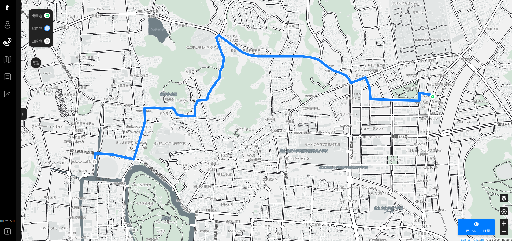

サイクルコンピュータ買うた（お散歩カメラ 2023-07-29）

サイクルコンピュータ買うた
サイクルコンピュータまたはサイクロコンピュータ（cyclocomputer）あるいはバイクコンピュータとか呼ばれてるやつ。 以前から欲しいなぁとは思ってたが，たとえば有名な GARMIN 製のやつとか7.5万円もするし，そこまでいかなくてもナビ機能付きだと平気で3,4万円するのね。 ぶっちゃけ持ってる自転車の値段に見合わないわけ。
そういうわけで諦めてたんだけど…
これ見て衝動買いしてしまった。
最初 Amazon でポチるつもりだったんだけど

- trimm ROLLIN サイクルコンピュータ GPS 自転車 速度計 ワイヤレス ナビゲーション ANT+センサー対応 Bluetooth 心拍数 高度計 2.7インチ スピードセンサー(device only)
- Trimm
- B0BLNFPWTQ (ASIN), 8809748020286 (EAN)
- 評価
韓国企業だけどモノは made in Chaina って書いてあった。ナビ機能付きで2万円以下というのは安い。スマホアプリと連携させて操作する。モノクロ液晶だがバッテリ消費は少なめ。各種センサーやスマートウォッチと連携可能。
“device only” とかよく分からんことが書いてあるのでベンダ企業（韓国）から直接購入した。 なんか 2023-08-06 まで15%オフのセールスしてるし。 まぁ，割引分は送料払ったらぶっ飛んだけどね（笑） ちなみに Speed Cadence sensor とセットで購入。
ちうわけで届いた。
trimm ROLLIN はスマホアプリとの連携が必須1。
このアプリがないと本体デバイスにセンサを接続できない罠。
さっそく取り付けてみよう。 Cadence sensor はクランクに取り付ける。
（2023-07-30 撮り直した）
デバイスはハンドルバーに取り付ける。
おっと。 スマホが写り込んでる（笑） ルートを設定2 してお出掛けしますか。
お散歩カメラに行こう
今回の目標は3つ。
- まずは実家に行って親父殿に線香をあげる
- ガンダムマンホールを探せ
- 理髪店で髪を切る
まずは実家に寄って線香をあげた後，宍道湖に向かって Go。 今日の宍道湖。
今日もピーカンで暑い。
アッガイのマンホールは宍道湖沿いの道にあるというのは想像してたが，実はよく通る道にあった。 つか Google Maps にマーキングされてたよ。
ちうわけでアッガイ発見。
いやぁ，アッガイいいよね。
ほんじゃあ，まぁ，とりあえず髪切りに行くか。
ナビさんは裏道がお好き
ナビ機能がイマイチ。 つか，サイクルコンピュータのナビってこんなもんなの？ 比較対象になるものを持ってないから出来がいいのか悪いのか分からん3。
あらかじめ決めたルートからちょっとでも外れると，とたんに迷子になる。 スマホアプリの「デバイス設定」で「ルート再検索」を有効にすると再検索できるようになるんだけど，基本的に最初に決めたルートに無理やり後戻りするようなルートを選択する。 いやいやいや。
あと，やたらと裏道を使おうとするのね。 たとえば学園通りの今井書店と堀川地ビール館の2地点のみ設定してルート検索したら…

trimm Center
いや，なんでそんなヘンテコなルートを選択する！？ まぁいいか，と取り敢えずナビの言うがままに進んでみたが，嫌がらせかっちうくらいに裏道ばかり案内する。 「それ私道じゃねーの？」って感じの小路も行かされるし，挙句の果てに階段を降りる羽目に。 ナビに向かって「なんでやねん」を連呼しちゃったよ。
松江市の中心部はもともと城下町で変な裏道小路がたくさんあるのね。 でも今は主要道路はちゃんと整備されていて自転車にも優しい道になっている。 一応観光地だし。 だから，わざわざ裏道を選択する必要は全くないわけよ。 こりゃあ，街乗りで trimm ROLLIN のナビは使えんなぁ。
…気を取り直して，一応ガンダムのマンホールも確認しておく。
よし！ 本日の目標は完遂。
帰り路
それでは松江城に行って定点観測。
残念ながら大山は見えなかった。 夏の空は透明度が低い。
おっ，アオサギがお堀で涼んでる。
あとは夕方になるまで県立図書館に引きこもる。
帰り道の宍道湖
やっぱり途中でくじけてクールダウン。
もう少し気温が下がるまで待って帰宅した。
今日は（自転車での移動分も含めて）13K歩あるいた勘定になるようだ。 そこそこ運動したな。
trimm ROLLIN の感想
ナビ機能はちょっとアレだったが（郊外で使えば多少マシかも），それ以外は問題ない。 個人的に（フィットネスバイクじゃなく）公道ではどの程度の cadence でペダルを漕いでるのかちゃんと測定したかったので，それが分かっただけでもよかった。 あと勾配の情報とかも分かるようになったので，もう少し考えて乗れるようになるかな。
ちなみに，デバイスに内蔵されている地図は Google maps じゃなくて OpenStreetMap のデータを使ってるらしい。 おおっ，こんなところで使われてるのか。 確かに組み込み機器なら OSM のほうがいいかもね。
今回はバッテリを満タンにしてから使い始めたが，1日フルで使ってたわけではないが，5%くらいしか減ってなかったので，保ちはいいのだろう。
Cadence sonsor のほうはボタン電池が入ってた。 こっちはクランクに付けっぱなしでよかろう。
他の各種センサと連携可能。 今どきの電動変速機もモニタできるし，パワーメーターもモニタできる，そうな。 私は持ってないけど。 そういや，スマートウォッチと連携して心拍数も見れるらしいのだが fitbit 製品は対象外のようだ。 残念。
あとは… そうそう， Strava とかのソーシャルサービスとも連携できる。 プライベートを晒すリスクがあるのでご利用は計画的に。 私は… 今のところは参加しないかな。
私は cadence と勾配くらいしか見ないが（GPS 測位計と加速度計はデバイスに内蔵されている），デバイスの画面レイアウトや表示内容はかなり弄れるので（要スマホアプリ4），使う機能だけ表示するようカスタマイズすればいいだろう。
これだけ機能があるなら充分なんじゃないかな。 スマホアプリと連携させて操作するのがウザいという方には向かないかも。 あと表示デザインがショボいのが我慢できない人とか韓国製品が嫌いな方とかも（笑）
しばらくはこれで遊んでみますかねぇ。
ブックマーク
- 初めてのサイクルコンピューターには！高スペック・低価格のtrimm ROLLIN｜マクアケ - アタラシイものや体験の応援購入サービス : trimm ROLLIN の日本語情報はここが一番詳しかった
- Strava（ストラバ）とサイコンを連携してライドを楽むための情報をお伝えします。
参考

- ミニサイズ Shokz OpenRun Mini 骨伝導イヤホン 公式ストア正規品 ワイヤレス 急速充電 驚きの通話品質 IP67防塵防水 bluetooth5.1 2 30日間返品無料 コズミックブラック
- Shenzhen Shokz Co., Ltd.
- エレクトロニクス
- B09TVLHJ1X (ASIN), 4512223694288 (EAN)
- 評価
以前のものはマルチファンクションキーが利かなくなったので Black Friday の安売りのタイミングで買い替え。私のように頭の小さい人向け（笑） 値段並みの音質はある，と思う。耳が自由って素晴らしい。

- 高儀 TAKAGI ボールポイント 六角棒レンチ 9本組 グレー
- 髙儀(Takagi)
- Tools & Hardware
- B006JZE7YK (ASIN), 4907052321953 (EAN)
- 評価
自転車整備用に購入。クロモリ製。重い。

- Canon コンパクトデジタルカメラ PowerShot ZOOM 写真と動画が撮れる望遠鏡 PSZOOM
- キヤノン (Release 2020-12-10)
- エレクトロニクス
- B08L4WKDZ7 (ASIN), 4549292179675 (EAN)
- 評価
望遠鏡型コンパクトデジカメ。メモリと充電器（要 Power Delivery）は別に用意する必要がある。使い勝手はまぁまぁ。

- [FAIRWEATHER(フェアウェザー)] stem bag x-pac/coyote
- FAIRWEATHER(フェアウェザー)
- B08K34WLXD (ASIN)
- 評価
スポーツサイクルのステム部分に取り付けられる小物入れ。防水仕様。底に小さなハトメ穴が空いていて，万一水が入った場合でも排出できるようになっている。

- Fitbit Inspire2 フィットネストラッカー Black ブラック L/Sサイズ [日本正規品]
- Fitbit (Release 2020-10-02)
- エレクトロニクス
- B08FSBNJG8 (ASIN), 0810038852805 (EAN), 810038852805 (UPC)
- 評価
私の場合，心拍数がモニタできればいいので充分な性能。

- VAAM(ヴァーム) 明治 ヴァーム(VAAM) アスリート 顆粒 栄養ドリンク風味 4.7g×10袋
- 明治 (Release 2021-03-16)
- ヘルスケア&ケア用品
- B08VMWL13F (ASIN), 4902705035614 (EAN)
- 評価
運動時に脂肪をエネルギーに変えやすくする働きがあるらしい。お試しで買ってみた。とりあえず1時間以上自転車に乗る場合に服用している。水に溶かさず飲むと書いてあるが，水と一緒に飲まないと大変なことになるので注意（経験済み）

- ビオレUＶ アクアリッチ アクアプロテクトミスト 60ミリリットル (x 1)
- 花王 (Release 2023-02-08)
- ヘルスケア&ケア用品
- B0BT1X9H7B (ASIN), 4901301416438 (EAN)
- 評価
スプレータイプで白くならない。鞄に忍ばせて手軽に使える。

{kind=link}
-
スマホアプリは110円/月の費用がかかる（初月無料）。ただし，実際にサイクルコンピュータを購入してペアリングして使っていれば無料らしい？ なんか勝手にサブスクリプション契約されたことになっててビックリした。さすが韓国製品はえげつない（笑） ストアから手動で契約解除できるので，アプリを削除する際は忘れないこと。ちなみに契約解除すると殆どの機能が使えなくなる，らしい。 【2023-10-09 追記】 今見たらいつの間にかサブスクリプション契約がなくなってるな。どうなってるのだろう？？？ ↩︎
-
ルート設定はスマホアプリで行うが Web アプリケーションも用意されている。アカウントはスマホアプリで登録したものを使う。 ↩︎
-
スマホアプリとの連携で音声による案内もできる。でも，自転車で走ってるときに耳を塞ぐヘッドフォンやイヤフォンはお勧めできないので，使いみちはないかな。骨伝導ヘッドセットを組み合わせるならイケるか？ ↩︎
-
スマホアプリの 詳細→デバイスデータフィールド で表示画面をカスタマイズできる。全般的にアプリの使い勝手が悪い。慣れの問題かもしれないが，できることとできないことの境界がよく分からなくて，かなり試行錯誤した。デバイスはそれ以上に操作が分かりにくい。電源を含めボタンが3つしかない上に，モードによってボタンの意味が変わる。電源ボタンだと思って押したらタイムトライアルのモードになって「なんでやねん」て叫んでしまった（←走行中（ナビ含む）のモードのときは電源オフできない。電源ボタンは他の操作ボタンとは分けるべきだよなぁ）。そういや，ナビの最中にうっかりナビモードを切ってしまい，再開しようとオンにしたらナビのスタート地点に戻ろうとするし。これにも「なんでやねん」て叫んでしまった（笑） ↩︎